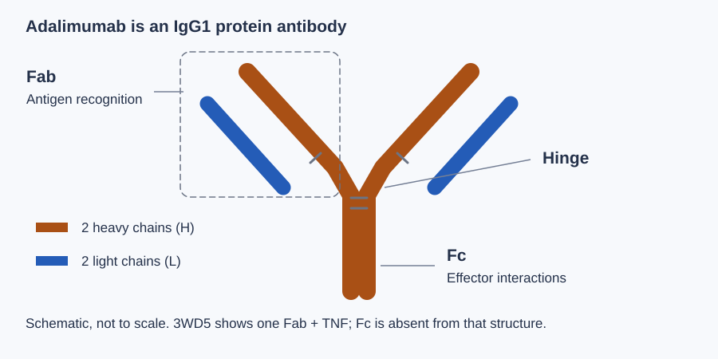
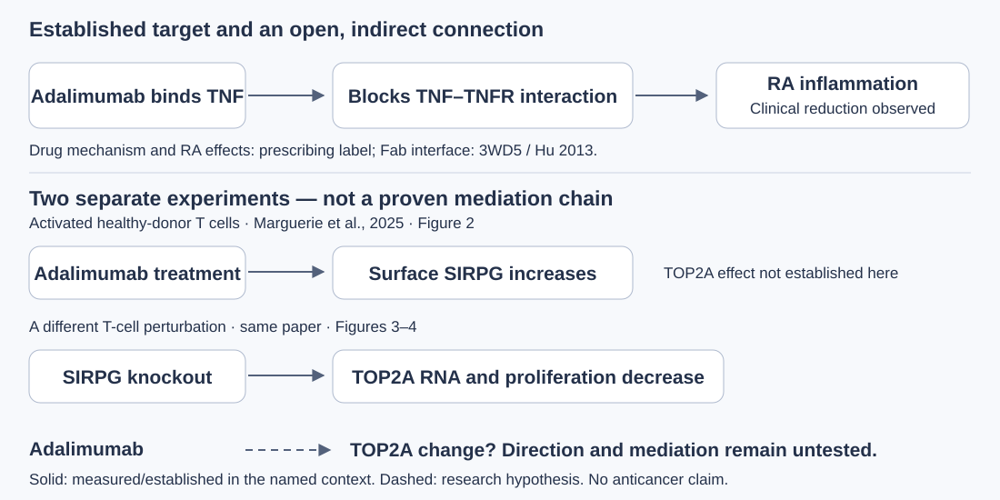
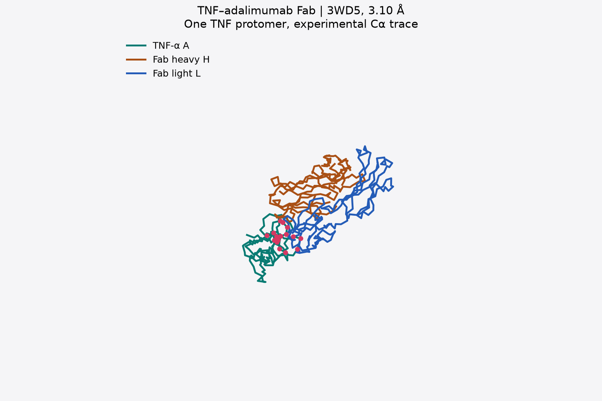
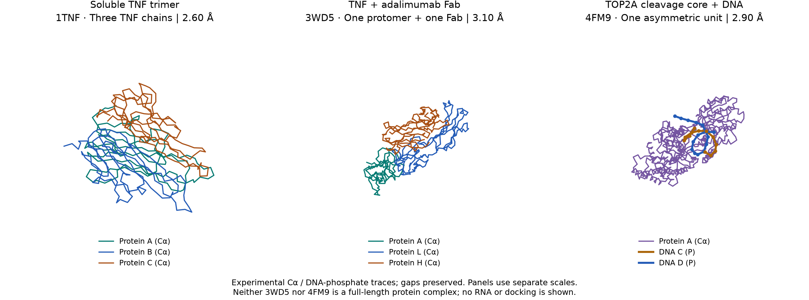
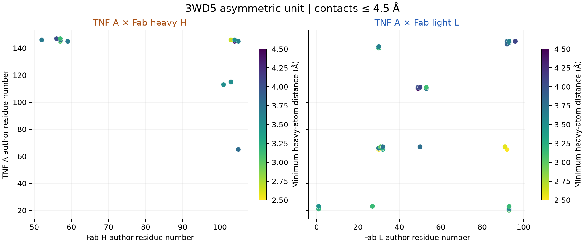
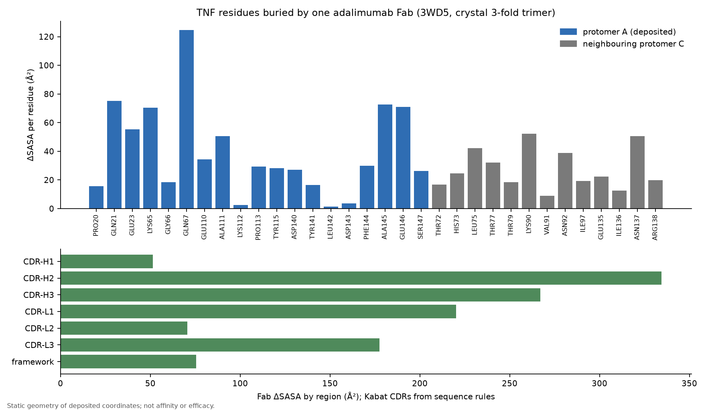
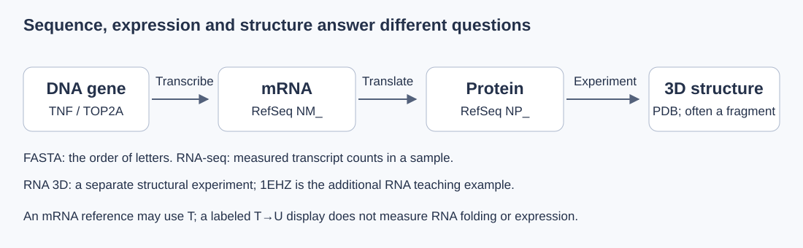

TNF-α و اتصال آدالیموماب
از شناخت آرتریت روماتوئید و سازوکار دارو شروع میکنیم؛ سپس ساختار، کدونها و دادههای RNA-seq را میخوانیم.
پرسش ما: آدالیموماب چگونه به TNF متصل میشود و پژوهشها دربارهٔ این اتصال چه یافتهاند؟ مقالهٔ مرور، پاسخهای مطالعات ساختاری، آزمایشهای اتصال و مدلسازی را کنار هم بررسی میکند.
منابع کامل و ورود مستقیم به ارائه
درس، پژوهش و ارائه در ۹ فصل
در هر مبحث، ابتدا مفهوم را میخوانیم، با همان مفهوم بخشی از اتصال آدالیموماب به TNF را بررسی میکنیم و سپس حاصل کار را برای کلاس توضیح میدهیم. فصلها ترتیب یادگیری را پیشنهاد میکنند؛ ابزارها و کتابچه از بخشهای بالای صفحه مستقیماً در دسترساند.
بارگذاری درس…
واژههای لازم را با هم روشن کنیم؛ اگر میدانید میتوانید ببندید
این قدم چه چیزی به پاسخ ما اضافه میکند؟
آزمون همین مبحث
آزمون برای تمرین است؛ پاسخ و توضیح آن را میتوانید دوباره بررسی کنید. نتیجه، نمرهٔ رسمی یا گواه تسلط نیست.
پاسخها، یادداشت و وضعیت مطالعه در همین مرورگر ذخیره میشوند و به سرور فرستاده نمیشوند. پاککردن دادههای مرورگر آنها را حذف میکند؛ دستگاه مشترک ممکن است در اختیار دیگران باشد.
بیماری، دارو و پرسش مطالعهٔ ما
از پایه شروع کنید: سلول، پروتئین و اتصال دارو یعنی چه؟ این درس برای خوانندهٔ علاقهمند به زیست نوشته شده و پیشنیاز دانشگاهی فرض نمیکند.
پرسش ما: آدالیموماب چگونه به TNF متصل میشود و پژوهشها دربارهٔ این اتصال چه یافتهاند؟ با خواندن ساختارها، آزمایشهای اتصال و مطالعات محاسباتی، پاسخها را مقایسه میکنیم. روش مرور مقالهها
مرجع ساختاری: اتصال شناختهشدهٔ TNF–Fab پایهٔ یادگیری شکل و محل اتصال دارو است. مسیر توالی هم از باز و کدون به آمینواسید میرسد. مقدار RNA و پاسخ بیمار، اندازهگیریهای جدا هستند؛ ممیزی ادعاها و منابع حدود هر شاهد را مشخص میکند.
در این داستان هر مولکول چه نقشی دارد؟
- آدالیموماب
- داروی آنتیبادی از نوع IgG1 است. با بخشهای شناسایی خود به TNF متصل میشود و پیامرسانی وابسته به آن را مهار میکند.
- TNF-α
- پروتئین پیامرسان التهابی؛ شکل محلول آن میتواند به صورت سهزیرواحدی باشد. 3WD5 فقط یک زیرواحد همراه با Fab را در نمای حاضر نشان میدهد.
- CRP
- پروتئین پاسخ التهابی که مقدارش در خون پیگیری میشود. نشانگر بالینی است؛ کاهش آن بهتنهایی محل اتصال مولکولی دارو را تعیین نمیکند.
- TOP2A
- ژن TOP2A پروتئین توپوایزومراز IIα را میسازد؛ این آنزیم در هستهٔ سلول در تنظیم پیچخوردگی DNA و تقسیم سلول نقش دارد. مقایسهٔ آن با التهاب و سرطان به شواهد جداگانه نیاز دارد؛ هدف اتصال آدالیموماب در این پروژه TNF است.

اتصال دارو چطور پیام التهاب را کم میکند؟
TNF پیامرسان، TNFR گیرندهٔ روی سلول و آدالیموماب آنتیبادیِ متصلشونده به TNF است. سه مرحله را ببینید؛ شکل زیر یک طرح مفهومی است و از مختصات اتمی یا زمان واقعی واکنش ساخته نشده است.
تشبیه «قفل و کلید» کمک میکند اتصال به یک هدف مشخص را تصور کنیم؛ پروتئینها انعطافپذیرند و شیمی سطح هم اهمیت دارد. شرح قدمبهقدم اتصال، میل اتصال و اثر درمان · شاهد تجربی اتصال
پس از مبانی: منابعِ ارتباط احتمالی با TOP2A
کدام رابطه ثابت شده و کدام هنوز پرسش است؟

- پشتیبانیشده
- اتصال مستقیم Fab آدالیموماب به TNF در ساختار بلوری ثبت شده است. نقشهٔ تماس ما نزدیکی اتمها را در همان فایل اندازه میگیرد.
- دو آزمایش جدا
- در مطالعهٔ Marguerie 2025، یک آزمایش افزایش SIRPG پس از آدالیموماب را گزارش کرد؛ در آزمایشی دیگر، حذف ژن SIRPG با کاهش RNA مربوط به TOP2A همراه بود. این دو مشاهده، اندازهگیری مستقیمِ اثر آدالیموماب بر TOP2A نیستند.
- فرضیهٔ بررسیپذیر
- تغییر محیط التهابی ممکن است بهطور غیرمستقیم با برنامهٔ تکثیر سلولی مرتبط باشد. در شواهد بالا، اثر آدالیموماب بر TOP2A مستقیماً اندازهگیری نشده؛ اتصال دارو به TOP2A یا فایدهٔ ضدسرطان از آن نتیجه نمیشود.
نوع آزمایش و نقد مقالهها را پیش از ساختن یک زنجیرهٔ علّی بخوانید. جدول شواهد و حلقههای اندازهگیرینشده
زمینهٔ بیماری: آرتریت روماتوئید
در RA التهاب مفصل زمینهٔ بالینی این پروژه است. مدل سهبعدی اتصال به TNF را توضیح میدهد؛ اندازهگیری CRP و فعالیت بیماری به لایهٔ بالینی تعلق دارند. برای وصل کردن این دو لایه باید طراحی و محدودیت مطالعهٔ بیمار را هم بررسی کرد.
مسیر موازی: شناخت TOP2A و کار آن روی DNA
ابتدا DNA، معنی آنزیم و نقش TOP2A در تقسیم سلول را میآموزیم. بررسی ارتباط با بیماری یا دارو پس از این شناخت و وجود دادهٔ مناسب انجام میشود. درس مستقل و مقدماتی TOP2A
مرور پیشرفتهٔ مقایسه با سرطان؛ برای مطالعهٔ بعدیمسیر نقاط و نمای نواری، دو روش رسم یک ساختارند. تطبیق 3WD5 با RCSB و علت تفاوت ظاهر

در حال بارگذاری مختصات آزمایشگاهی…
در حال بارگذاری نمای نواری…
نمای اولیهٔ ثابت: 3WD5. این فایل آنتیبادی کامل یا TNF سهزیرواحدی را نمایش نمیدهد؛ همسایههای تقارن بلوریِ مؤثر در اپیتوپ نیز در این نما نیستند.
برای چرخش بکشید؛ با اسکرول یا دو انگشت بزرگنمایی کنید. با تمرکز روی هر نما: کلیدهای جهتی، +، − و 0. در مسیر Cα، انتخاب نقطه با کلیک یا فهرست زیر.
مختصات هر نقطه در واحد آنگستروم گزارش میشود.
این شکل را چطور بخوانیم؟
- TNF-α
- یک پروتئین پیامرسان در التهاب است. در مدل 3WD5 زنجیرهٔ A، بخشی از همین پروتئین را نشان میدهد.
- Fab
- بخش شناسایی آنتیژن در آنتیبادی است. در این ساختار، زنجیرههای H و L قطعهٔ Fab آدالیموماباند.
- Cα
- کربن آلفای هر آمینواسید در ستون اصلی پروتئین است. نقاط مدل، جای این اتمها را نشان میدهند؛ لوله، مسیر بین آنها را برای دیدن شکل روشنتر میکند.
- آنگستروم Å
- واحد فاصله در مقیاس اتمی است؛ 1 Å = 0.1 nm. مختصات نقطهٔ انتخابشده و فاصلههای نقشه با همین واحد گزارش میشوند.
- برای دیدن شکل سهزیرواحدی TNF، از فهرست بالا 1TNF را انتخاب کنید.
- در 3WD5 زنجیرههای H/L را خاموش و روشن کنید تا جای Fab نسبت به TNF مشخص شود.
- نقاط رابط و نقشهٔ تماس نشان میدهند کدام آمینواسیدها در همین فایل به یکدیگر نزدیکاند.

نکتهٔ مقایسه: سازهٔ آزمایشگاهی با توالی مرجع یکسان نیست
توالی سازههای 1TNF و 3WD5 در دو جایگاه تفاوت دارد؛ هر دو با مرجع کنونی TNF نیز کاملاً یکسان نیستند. تفاوت شکل این فایلها را نمیتوان خودکار به اتصال آدالیموماب نسبت داد؛ سازه و محیط بلوری هم متفاوتاند. این اختلافِ منبع، بهتنهایی «جهش بیماریزا» نیست. جایگاهها و روش مقایسهٔ توالی
آنچه در رابط اتصال اندازه گرفتهایم
دادهٔ محاسبه و پارامترهاتماسها از اتمهای سنگین با occupancy مثبت در زنجیرههای A/H/L ساختار 3WD5 استخراج شدهاند. این محاسبه، بخشی از رابط موجود در فایل را توصیف میکند.
- جفت آمینواسید
- —
- جفت اتم در تماس
- —
- آمینواسید رابط در TNF
- —
- حد فاصله
- — Å
در حال خواندن خلاصهٔ محاسبه…


خردهآزمایشها روی TNF سهتایی و آدالیموماب
داده و قواعد این آزمایشهاسهتایی TNF از تقارن بلور 3WD5 بازسازی شده است. اینجا خودتان آستانهٔ تماس را تغییر میدهید، شریکهای هر آمینواسید را میبینید و زنجیرهٔ جانبی یک آمینواسید را «حذف مجازی» میکنید. همهٔ نتایج هندسیاند؛ قدرت اتصال، ΔΔG یا اثر درمان را اندازه نمیگیرند. روش و نتایج کامل

در حال بارگذاری سهتایی و سه Fab…
- TNF زیرواحد A (ثبتشده)
- زیرواحدهای همسایه B و C
- زنجیرهٔ سنگین H
- زنجیرهٔ سبک L
- آمینواسیدهای در تماس، با آستانهٔ فعلی
آزمایش ۱. آستانهٔ فاصله را تغییر دهید
دو اتم را «در تماس» میشماریم اگر فاصلهشان از آستانه کمتر باشد. مقدار پیشفرض تحلیل 4.5 Å است. ببینید آیا یافتهٔ اصلی، یعنی سهم زیرواحد همسایه، به این انتخاب حساس است.
- جفت اتم در تماس
- —
- روی زیرواحد A
- —
- روی زیرواحد همسایه
- —
- سهم همسایه
- آمینواسید TNF
- —
- جفت آمینواسید
- —
آزمایش ۲. شریکهای یک آمینواسید
پیشنهاد: A:GLN21؛ جهش آن در مقالهٔ Hu اتصال را حدود ۲۰۰ برابر ضعیف کرد.
| شریک | ناحیه | کمترین فاصله (Å) | جفت اتم | نوع احتمالی |
|---|
آزمایش ۳. حذف مجازی زنجیرهٔ جانبی (آلانین مجازی)
در جهشزایی آلانین، زنجیرهٔ جانبی پس از Cβ حذف میشود. اینجا همان اتمها را از شمارش برمیداریم و میبینیم کدام تماسها از دست میروند. ساختار شل نمیشود و انرژی محاسبه نمیشود؛ پس این عدد با ΔΔG یا KD آزمایشگاهی برابر نیست و فقط برای مقایسهٔ کیفی است.
دادهها هنگام رسیدن به این بخش بارگذاری میشوند.
از توالی تا زنجیرهٔ دیدهشده
راهنمای توالیها و محدودیتهاmRNA یک توالی نوکلئوتیدی است؛ بخش کدکنندهٔ آن، CDS، به توالی آمینواسیدیِ پروتئین ترجمه میشود. ساختار سهبعدی یک لایهٔ دیگر است: در مدلهای حاضر مختصات پروتئین داریم و در 4FM9، DNA؛ ساختار سهبعدی RNA در این دادهها وجود ندارد.

در حال خواندن فهرست توالیهای مستند…
کدون چگونه به آمینواسید میرسد؟
هر کدون در بخش کدکننده، CDS، سه باز دارد. از شروع CDS ثبتشده میخوانیم؛ کل RNA را دلخواه سهتا سهتا ترجمه نمیکنیم. این درس، توالی مرجع را نشان میدهد و با شمارش RNA در بیمار فرق دارد. درس باز، کدون و آمینواسید با مثال واقعی
در حال خواندن نمونههای کدون…
۱۲ کدون اول از چپ به راست، در جهت 5′ → 3′. یک کدون را انتخاب کنید؛ بخش میانیِ توالی در این پیشنمایش نیست.
نمایش U به جای T، فقط تبدیل حروف رکورد مرجع mRNA است؛ شکل RNA یا توالی اختصاصی بیمار تولید نمیشود. رکورد اصلی
جدول کامل ۶۴ کدونِ کد استاندارد
۶۱ کدون برای ۲۰ نوع آمینواسید و سه کدون پایان. ستون T قرارداد حروف است. جدول NCBI
| کدون RNA | نمای T | علامت آمینواسید | نام |
|---|
در خود آدالیموماب چه حروفی داریم؟
اینها آمینواسیدهای توالی اعلامشدهٔ زنجیرههای H/L قطعهٔ Fab در 3WD5 هستند؛ همهٔ دارو نیستند. چند کدون میتوانند یک آمینواسید بسازند، پس از این حروف یک RNA یکتا تعیین نمیشود.
برای زنجیرههای 3WD5 دو نوع رکورد داریم: توالی اعلامشدهٔ سازه و آمینواسیدهای دارای مختصات پذیرفتهشده. تعداد آمینواسیدهای فایل توالی میتواند با تعداد نقاط Cα فرق کند؛ بعضی اتمها ثبت نشدهاند یا اشغالپذیریِ صفر دارند. زنجیرههای H/L قطعهٔ داروییاند، نه ژن انسانی به نام آدالیموماب.
اختلاف واقعی مرجع و سازهٔ TNF را چگونه بخوانیم؟
زنجیرهٔ A در 3WD5 در جایگاه ۳۱ دارای D است؛ جایگاه مرتبط ۱۰۷ در مرجع NP_000585.2 دارای R است. سازهٔ 1TNF نیز در جایگاه ۱۴۳ دارای L است، درحالیکه مرجع در جایگاه ۲۱۹ دارای D است. اینها اختلاف توالیِ منابعاند؛ برای مقایسهٔ ساختاری باید ثبت شوند. جزئیات و شمارهگذاری
مقالههای مرتبط با ساختار و دارو
داستان آزمایشها و معنی نتیجههای مقالهها؛ از تعریف اصطلاحات تا اینکه پژوهشگر چه کاری کرد و از داده چه نتیجهای میتواند بگیرد.
بررسی کامل مقالههامطالعات برای شناخت اتصال TNF–Fab، دادهٔ بیماران RA و RNA-seq؛ منابع مدلسازی و ارتباط احتمالی با TOP2A برای مطالعهٔ بعدی. نوع آزمایش و مرز نتیجهگیری هر مقاله کنار آن آمده است.
در حال خواندن مقالههای بررسیشده…
بررسی اجراشدهٔ RNA ژن TOP2A
دیتاست GSE339038 چهار اهداکننده و بازوی آدالیموماب دارد. در بررسی توصیفی هشت کتابخانه، چهار مقدار CPM دارو از کنترل همان فرد کمتر بودند. آزمون آماری کامل و فعالیت آنزیم هنوز سنجیده نشدهاند؛ روش، جدول و محدودیتها در گزارش بررسی RNA آمدهاند.
دو نتیجهٔ SIRPG را یک آزمایش فرض نکنیم
- آزمایش دارو: در مطالعهٔ Marguerie 2025، افزایش SIRPG پس از آدالیموماب گزارش شده است.
- آزمایش ژن: حذف SIRPG در آزمایش جداگانه با کاهش TOP2A RNA همراه بود.
- حلقهٔ اندازهگیرینشده: این طراحی، تغییر TOP2A پس از آدالیموماب را مستقیماً نشان نمیدهد. پاسخ به پرسش غیرمستقیم باید وزن و زمینهٔ هر آزمایش را جدا بررسی کند.
یک مسیر قابل ارائه و بازتولید
- تعریف نقشها: آنتیبادیِ دارویی، هدف TNF، نشانگر CRP و مقایسهٔ داخلسلولیِ TOP2A را مشخص کنید.
- خواندن شکل: ساختار آزاد 1TNF و کمپلکس 3WD5 را با ذکر زنجیرهها و اختلاف سازهها توضیح دهید.
- اندازهگیری: تماس اتمهای سنگین با اشغالپذیری مثبت را در آستانهٔ 4.5 Å گزارش کنید؛ تعداد تماس، قدرت اثر دارو را اندازه نمیگیرد.
- نقد شواهد: نتیجهٔ ساختاری، اندازهگیری بالینی و تغییر بیان RNA را جدا بخوانید؛ برای پیوند غیرمستقیم، شواهد موافق و مخالف را ثبت کنید.
منابع اصلی پروژه
راهنمای استفاده از منابع- 3WD5مختصات کمپلکس TNF–Fab؛ مبنای نمایش و محاسبهٔ تماس
- 1TNFساختار TNF آزاد برای شناخت شکل سهزیرواحدی
- 1B09مقایسهٔ اختیاری: ساختار CRP
- P01375توالی و اطلاعات پروتئین TNF در UniProt
- P02741توالی و اطلاعات پروتئین CRP در UniProt
اختیاری برای مرحلهٔ بعد: منابع پیشرفته و یادداشتهای قبلی
توالیهای مرجع در تب توالیها قابل بررسیاند. این فهرست گسترده برای مطالعهٔ اختیاری دادههای بیان ژن و توسعهٔ بعدی نگه داشته شده؛ تحلیل جدید اُمیک در این نسخه اجرا نشده است.
در حال خواندن فهرست منابع…
| شناسه و منبع | نوع شواهد | زمینه | دسترسی | رکورد اصلی |
|---|---|---|---|---|
| در حال بارگذاری… | ||||
داکینگ را با پاسخی که از قبل معلوم است سنجیدیم
پروتکل و فرمانهافوسفوکولین دوباره در 1B09 (پروتئین واکنشی C) داک شد و pose برگشتی با pose ثبتشدهٔ کریستال سنجیده شد. این آزمونِ روش است، نه جستوجوی مهارکنندهٔ تازه: هیچچیز دربارهٔ آدالیموماب، TNF یا TOP2A اندازهگیری نمیشود.
| دروازه | معیار | نتیجه | قبول؟ |
|---|---|---|---|
| در حال خواندن رکورد داکینگ… | |||
در حال خواندن رکورد داکینگ…
RNA-seq بیماران: هر گروه پاسخ چه شکلی دارد؟
داده و روش خلاصهدیتاست GSE138746، سلولهای خون (PBMC) بیماران روماتوئیدِ گروه آدالیموماب. RNA پیش از شروع دارو گرفته شده و پاسخ در ماه ۶ ثبت شده است؛ پس اینجا اثر دارو روی RNA دیده نمیشود. برای هر گروه فقط میانه و چارکها نشان داده میشود، نه مقدار تکتک بیماران، و هیچ آزمون آماری انجام نشده است.
| گروه پاسخ در ماه ۶ | تعداد بیمار | چارک اول | میانه | چارک سوم |
|---|
دادهها هنگام رسیدن به این بخش بارگذاری میشوند.
کتابچهٔ پژوهش
نسخهٔ اصلی در GitHubمتنهای پروژه را اینجا بخوانید؛ از فهرست فصلها یک بخش یا متن کامل را انتخاب کنید. فرمولها و نمودارها از همان فایل منبع نمایش داده میشوند.
با انتخاب این تب، متن راهنما بارگذاری میشود.
متن ارائه برای مخاطبان کلاس نوشته شده است. با دکمهها یا PageDown / PageUp حرکت کنید؛ برای نمایش روی پرده، «نمایش اسلایدی» را انتخاب کنید.